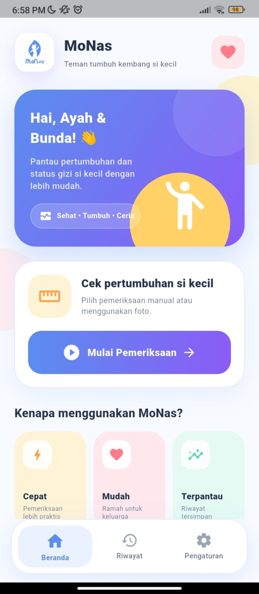
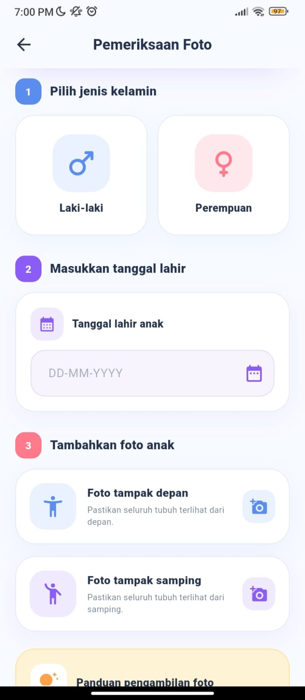
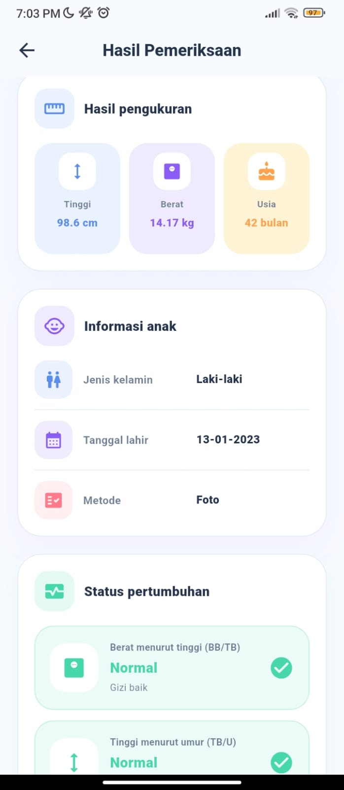
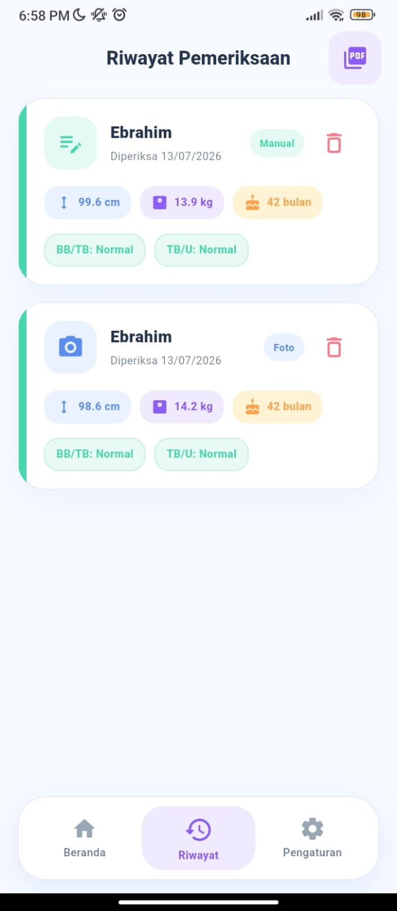

Capstone Design · Mobile Application
MoNas — Monitoring Nutritional Status of Children
Aplikasi Android untuk membantu pemantauan status gizi balita melalui estimasi tinggi badan, berat badan, dan klasifikasi status gizi menggunakan pengolahan citra digital.
Kontribusi Pengembangan
- Mengembangkan aplikasi mobile menggunakan Flutter.
- Membangun backend dan REST API menggunakan FastAPI.
- Mengimplementasikan segmentasi citra menggunakan OpenCV dan metode HSV.
- Menggunakan SQLite untuk menyimpan riwayat pemeriksaan.
- Mengimplementasikan klasifikasi status gizi berdasarkan standar antropometri.
96,58%
Akurasi Tinggi
89,37%
Akurasi Berat
90,68%
Usability
Python
FastAPI
Flutter
OpenCV
HSV
SQLite
REST API
Lihat Source Code